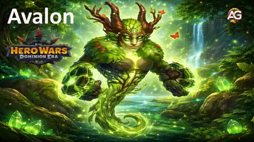
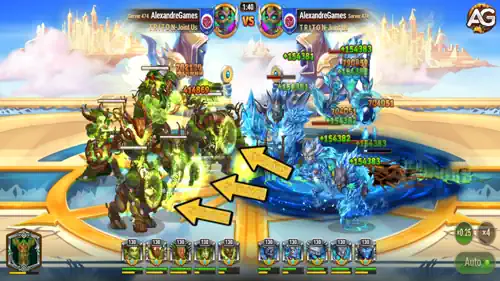
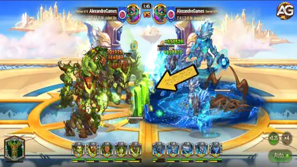
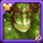
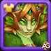
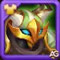
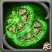
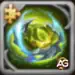

Avalon-Leitfaden: Bester Schild-Support-Titan für Hero Wars Dominion Era
- Von: Alexandre Domingos. .
Wenn Ihr Team genau in dem Moment zusammenbricht, in dem der Kampf eigentlich zu Ihren Gunsten kippen sollte, könnte Avalon das fehlende Teil sein. Dieser Erd-Unterstützungs-Titan schützt die gesamte Formation mit einem massiven Schild und verschafft Ihren Schadensverursachern in Hero Wars: Dominion Era die entscheidenden zusätzlichen Sekunden.
In diesem Avalon-Leitfaden sehen Sie, warum ein scheinbar einfacher Schild PvP-Kämpfe entscheiden, Dungeon-Läufe stabilisieren und Erd-Teams deutlich schwerer zu brechen machen kann. Wir behandeln seinen Skill, die besten Totemfusionen, Skins, Artefakte, Counter und die Teamzusammenstellung, die seinen Schutz am besten ausnutzt.

Wer ist Avalon?
Avalon ist ein Erd-Unterstützungs-Titan, der aus der hinteren Reihe kämpft und sich auf eine zentrale Aufgabe spezialisiert: das gesamte Team genau dann am Leben zu halten, wenn der Gegner mit Burst-Schaden alles überrollen will. Sein Markenzeichen ist ein Schild für alle Verbündeten, der den gesamten Rhythmus eines Kampfes verändern kann.
- Rolle: Unterstützung
- Element: Erde
- Position: Hintere Reihe
- Synergie: Angus, Eden, Sylva, Verdoc und Phyto
Er wird über den Kreis der Beschwörung erhalten und glänzt besonders in erdlastigen Aufstellungen, vor allem wenn Sie eine sichere Antwort gegen Wasser-Teams suchen. Avalon ist kein Titan für spektakulären Schaden. Man spielt ihn, weil er verhindert, dass das eigene Team auseinanderfällt, bevor die eigentliche Siegbedingung greift.
Avalon Vor- und Nachteile - Hero Wars: Web & Facebook
✅ Vorteile
- Schild für das gesamte Team: Forest Embrace legt auf alle Verbündeten einen Schild und gehört damit zu den zuverlässigsten defensiven Werkzeugen gegen Burst-Schaden im PvP.
- Exzellente Erd-Team-Synergie: Avalon passt natürlich zu Angus, Eden, Sylva und Verdoc und hilft Erd-Teams, stabil zu bleiben, während Kontrolle und Schaden immer mehr Druck aufbauen.
- Stark gegen Wasser-Räume: Als Erd-Titan ist er eine praktische Wahl für wasserbasierte Dungeon-Räume und gemischte Kämpfe, in denen Überlebensfähigkeit zählt.
- Wenig Komplexität, hoher Einfluss: Avalon ist auch für Einsteiger leicht zu verstehen, weil sein Nutzen direkt sichtbar ist: Sobald der Schild erscheint, bekommt Ihr Team mehr Zeit zu kämpfen.
- Sehr starke Totem-Synergie: Defensive elementare und urtümliche Totem-Skills harmonieren hervorragend mit Forest Embrace und lassen seinen Schutz im späten Spiel deutlich besser skalieren.
❌ Nachteile
- Geringer eigener Schadensdruck: Avalon bedroht gegnerische Teams nicht allein und ist darauf angewiesen, dass Verbündete seinen Schutz in Kills umwandeln.
- Anfällig gegen Feuer-Duelle: Feuer-Titanen setzen Erd-Teams natürlich unter Druck, wodurch Avalon es schwerer hat, wenn der Gegner starken Feuer-Burst mitbringt.
- Eindimensionale Rolle: Der Großteil seines Werts steckt im Schild. Wenn das Timing nicht passt, sinkt sein Einfluss deutlich.
- Kann in sehr schnellen Kämpfen übertroffen werden: In extrem aggressiven Aufstellungen erzeugen Supporter mit direktem Schaden oder schnellerer Energie manchmal mehr Tempo als ein rein defensiver Support.
- Braucht das richtige Team: Avalon funktioniert am besten, wenn seine Verbündeten gefährlich genug sind, das zusätzliche Überlebensfenster konsequent auszunutzen.
Avalon Fähigkeiten-Leitfaden - Hero Wars: Dominion Era
Verstehen Sie genau, wie Avalon Ihr Team schützt, warum sein Schild im PvP und Dungeon so wichtig ist und welcher Totem-Effekt seine Erd-Aufstellung besonders widerstandsfähig macht.
Fähigkeit 1: Forest Embrace
Was sie macht: Avalon wirkt einen Schild auf alle verbündeten Titanen. Einfach gesagt erhält jeder Verbündete zuerst eine Schutzschicht, bevor echte Gesundheit verloren geht. Wenn Ihr Team normalerweise an gegnerischem Burst zerbrechen würde, verschafft dieser Schild oft genau genug Zeit zum Überleben.
Wie sie funktioniert: Forest Embrace ist keine Heilung. Es ist temporärer Schutz, der eingehenden Schaden zuerst absorbiert. Genau das macht den Skill so wertvoll, wenn der Gegner ein oder zwei Titanen schnell löschen will. Statt sofort Gesundheit zu verlieren, muss das gegnerische Team erst den Schild durchbrechen, was seinen gesamten Siegplan verlangsamt.
Formel: Schildabsorption = (1,968,825).
Warum er im PvP wichtig ist: PvP-Kämpfe werden oft durch das erste große Schadensfenster entschieden. Forest Embrace beantwortet genau dieses Problem. Wenn die gegnerische Formation auf frühen Burst setzt, kann Avalon dieses Timing neutralisieren und Ihren Schadensverursachern Raum für den Gegenschlag geben. Priorität: Sehr hoch
Warum er im Dungeon wichtig ist: In Dungeon-Räumen, vor allem gegen Wasser oder gemischte Räume, nimmt der Schild Druck vom Rest Ihres Teams und macht gefährliche Schadensspitzen leichter kontrollierbar. Avalon wird deutlich wertvoller, sobald Konstanz wichtiger als Tempo ist.

Alexandres Tipp:
Avalon ist am stärksten, wenn der Rest des Teams bereits echten Schaden oder Kontrolle mitbringt. Sein Schild gewinnt den Kampf nicht allein, aber er gibt Angus, Eden und Sylva die Zeit, ihn für ihn zu entscheiden.

Fähigkeit 2 - Haupttotem: Erdgeist-Totem
Warum es zu Avalon passt: Wenn Ihr Team mindestens 3 Erd-Titanen auf dem Schlachtfeld hat, wird das Erdgeist-Totem automatisch aktiviert. Genau diese Art von Aufstellung will Avalon spielen, weil Erd-Teams in längeren Schlagabtauschen den Gegner überleben und dann bestrafen wollen.
Wie Song of the Ancient Mountains funktioniert: Das Totem erzeugt eine Kristallbarriere, die alle Verbündeten vor Angriffen schützt. Jedes Mal, wenn die Barriere Schaden absorbiert, verliert sie Haltbarkeit, reflektiert aber gleichzeitig den doppelten absorbierten Schaden auf die angreifenden Gegner. So entsteht eine starke defensive und offensive Schleife: Ihr Team wird schwerer zu töten, während der Gegner sich beim Durchbrechen selbst bestraft.
Formel: Barriere-Absorption = (7,659,015). Reflektierter Schaden = (2x absorbierter Schaden). Lebensbonus für Erd-Titanen = (+3,995,583).
Wert im PvP und Dungeon: Dieses Totem ist für Avalon hervorragend, weil es mehrere Verteidigungsschichten über Forest Embrace legt. Erst erhält das Team die Totem-Barriere, dann kommt Avalons eigener Schild hinzu. Gegen Formationen, die auf rohe Gewalt setzen, fühlt sich diese Kombination schnell erdrückend an. Priorität: Sehr hoch

Totem-Synergie-Tipp:
Wenn Avalon in einer echten Erd-Aufstellung steht, ist das Erdgeist-Totem nicht optional. Es macht jeden Burst-Versuch des Gegners zu einem riskanten Tausch und lässt Avalons Schutz deutlich schwerer überrennen.
Beste elementare Totemfusion für Avalon
Wenn das Erdgeist-Totem bereits das Fundament Ihres Teams ist, dann ist die elementare Fusion der Weg, dieses Fundament noch schwerer zu knacken. Für Avalon sind die besten elementaren Skills jene, die zusätzlichen Schutz erzeugen, gegnerische Aggression bestrafen oder genug Zeit kaufen, damit sein Schildzyklus seinen vollen Wert entfalten kann.
Wie funktioniert Totemfusion?
Im Fusionsfenster wählen Sie den Skill-Typ, entscheiden sich für den gewünschten Skill und investieren Katalysatoren, um die Chance auf dieses Ergebnis in einer besseren Stufe zu erhöhen. Wenn Ihr Totem bereits denselben Skill besitzt, steigert eine Wiederholung der Fusion die Wahrscheinlichkeit auf eine stärkere Version. Haben zwei Totems am Ende denselben Skill, ist im Kampf nur die höherstufige Version aktiv. Elementare Skills lösen meistens global aus und hängen nicht davon ab, dass ein bestimmter Titan aktiv eine Fähigkeit drückt. Deshalb sind sie für stabile defensive Teams wie Avalon-Kompositionen besonders wertvoll.
1. Platz - Murmur of the Crags

Elementares Totem: Murmur of the Crags
Murmur of the Crags ist die beste elementare Fusion für Avalon, weil sie genau das verstärkt, was er ohnehin schon hervorragend macht: das gesamte Team schützen. Sie erzeugt eine felsige Kaskade, die alle Verbündeten abschirmt, 450.625 Schaden absorbiert und den doppelten erlittenen Schaden an die Angreifer zurückwirft.
Im Kampf ist das leicht zu verstehen. Der Gegner versucht Sie zu bursten, muss aber erst noch eine weitere Barriere brechen und wird dabei selbst bestraft. Da Avalon bereits einen Schild für das ganze Team liefert, erzeugt Murmur of the Crags mehrere Schutzschichten, die im PvP extrem frustrierend und in längeren Dungeon-Kämpfen sehr nützlich sind.
Warum auf Platz 1: Diese Fusion ist die natürlichste Erweiterung von Avalons Identität. Mehr Barrierelaufzeit bedeutet mehr Wert aus jeder Sekunde, die Ihr Erd-Team am Leben bleibt.
2. Platz - Ice Age

Elementares Totem: Ice Age
Ice Age friert alle gegnerischen Titanen für 1 Sekunde ein, wenn die Basisfähigkeit des Totems aktiviert wird, und belegt sie mit Fragility, wodurch sie für 5 Sekunden 15,8 % mehr Schaden erhalten.
Das ist eine hervorragende zweite Option, weil Avalon Temposchwankungen liebt. Diese eine Sekunde Freeze unterbricht den gegnerischen Plan, und der erhöhte erlittene Schaden gibt Ihrem Team nach Forest Embrace ein sauberes Fenster für den Gegenschlag. Kurz gesagt: Sie überleben den Push des Gegners und Ice Age hilft Ihnen, härter zurückzuschlagen.
Warum auf Platz 2: Sie bringt Kontrolle und offensiven Ertrag, ist für den reinen Defensivwert aber etwas weniger konstant als Murmur of the Crags.
3. Platz - Last Flash

Elementares Totem: Last Flash
Last Flash löst aus, wenn der Titan eigentlich sterben sollte. Stattdessen gerät dieser Titan in einen brennenden Rage-Zustand, erhält 15 % Geschwindigkeit, wird gegen Effekte unverwundbar, kann nicht unter 1 Gesundheit fallen und bekommt für 5 Sekunden +16.100 Angriff. Es aktiviert sich einmal pro Kampf.
Für Avalon ist das wertvoll, weil ein Support-Titan, der etwas länger überlebt, noch ein weiteres Schutzfenster liefern oder zumindest verhindern kann, dass das Team zusammenbricht, bevor es sich stabilisiert. Es ist nicht so direkt synergetisch wie Murmur of the Crags, bleibt im PvP aber eine starke Notfalloption.
Warum auf Platz 3: Ein ausgezeichnetes Sicherheitsnetz für enge Kämpfe, aber weniger teamorientiert als die ersten beiden Optionen.
Beste urtümliche Totemfusion für Avalon
Urtümliche Fusionen lösen nur unter bestimmten Bedingungen aus. Deshalb sind für Avalon die besten Optionen jene Skills, die Schilde direkt belohnen oder ihm helfen, seinen Schutz zuverlässiger über den ganzen Kampf hinweg einzusetzen.
1. Platz - Echo Aegis

Urtümliches Totem: Echo Aegis
Echo Aegis ist die beste urtümliche Fusion für Avalon, weil sie direkt mit Schilden interagiert. Wenn ein Schild in Ihrem Team bricht, besteht eine 20-%-Chance, für 5 Sekunden einen weiteren Schild mit Haltbarkeit in Höhe von 4,2 % der maximalen Titan-Gesundheit zu erzeugen.
Das ist fast wie für Avalon gemacht. Forest Embrace sagt dem Gegner bereits: „Daran musst du zuerst vorbei." Echo Aegis ergänzt: „Und manchmal musst du direkt noch einen weiteren Schild brechen." Für Spieler, die es einfach mögen: Das Team fühlt sich dadurch zäh und extrem nervig zu beenden an.
Warum auf Platz 1: Beste direkte Synergie mit Avalons Identität und die frustrierendste Option für Gegner, die schnelle Kills sichern wollen.
2. Platz - Pulse of the Ancients

Urtümliches Totem: Pulse of the Ancients
Pulse of the Ancients heilt einen Titanen jedes Mal um 112.000 Gesundheit, wenn er eine Fähigkeit nutzt, mit einer Auslösung nur einmal alle 21 Sekunden.
Das hilft Avalon, länger auf dem Feld zu bleiben und in den entscheidenden Momenten für den Schild verfügbar zu sein. Es ist eine einfache und verlässliche Wahl, die sowohl im PvP als auch im Dungeon für mehr Konstanz sorgt, ohne kompliziertes Timing zu verlangen.
Warum auf Platz 2: Sehr stabile Sustain-Option, aber weniger explosiv als Echo Aegis, weil sie die Schild-Mechanik selbst nicht direkt verstärkt.
3. Platz - Primal Zeal

Urtümliches Totem: Primal Zeal
Primal Zeal gibt dem Titanen eine 20-%-Chance, bei Nutzung der Grundfähigkeit 40 % der maximalen Energie wiederherzustellen.
Für Avalon bedeutet schnellere Energie auch schnelleren Zugriff auf Forest Embrace. Selbst wenn der Proc nicht garantiert ist, kann ein früherer Schild den ersten großen Schadensaustausch eines Kampfes komplett verändern. Anders gesagt: Primal Zeal bringt den Schutz online, bevor der Gegner seinen Burst-Plan abschließen kann.
Warum auf Platz 3: Hohes Potenzial, aber zufälliger als die beiden sichereren Optionen darüber.
Bester Skin für Titan Avalon in Hero Wars: Dominion Era
Avalons Skin-Priorität sollte einer klaren Regel folgen: Halten Sie ihn zuerst am Leben, verbessern Sie danach den Wert für seine wichtigsten Matchups und investieren Sie erst zuletzt in offensive Boni mit geringerem Einfluss.

Standard-Skin
Gesundheit: +1.022.985
Entwicklungspriorität im PvP: Sehr hoch – Das ist Avalons bester Skin für PvP, weil rohe Gesundheit gegen jede Art von Schaden hilft. Ein toter Support liefert keinen Schild, daher ist es die effizienteste Investition, Avalon schwerer zu töten zu machen.
Entwicklungspriorität im Dungeon: Sehr hoch – Dungeon-Läufe belohnen Konstanz. Mehr Gesundheit macht Avalon über viele Räume hinweg deutlich sicherer, besonders wenn er in Wasser- und gemischten Kämpfen weiter Schilde setzen soll.

Champion-Skin
Elementarrüstung: +49.065
Entwicklungspriorität im PvP: Hoch – Elementarrüstung ist besonders nützlich, wenn Avalon gegen Wasser-Gegner eingesetzt wird, was eine seiner natürlichen Aufgaben als Erd-Titan ist. Sie ist situationsabhängiger als Gesundheit, im richtigen Matchup aber sehr effizient.
Entwicklungspriorität im Dungeon: Hoch – Avalon greift im Dungeon häufig Wasser-Räume an, deshalb hat dieser Skin hier mehr praktischen Wert als bei vielen anderen Titanen. Nach dem Standard-Skin ist er das zweitbeste Upgrade.

Mechanischer Skin
Elementarschaden: +230.160
Entwicklungspriorität im PvP: Mittel – Avalon wird nicht wegen seines Schadens gespielt, daher verändert dieser Skin seine Kernleistung deutlich weniger als Gesundheit oder Elementarrüstung. Er ist eher ein Luxus-Upgrade, sobald die Überlebenswerte bereits gut ausgebaut sind.
Entwicklungspriorität im Dungeon: Mittel – Der offensive Bonus hilft zwar, Wasser-Räume schneller zu räumen, kommt aber trotzdem erst nach den beiden Skins, die Avalons eigentliche Aufgabe direkter verbessern.
Avalon Artefakt-Entwicklungspriorität in Hero Wars: Dominion Era
Bei Avalons Artefakten sollten Überlebensfähigkeit zuerst, Matchup-Stabilität an zweiter Stelle und Schaden erst zuletzt priorisiert werden. Das Ziel ist, Forest Embrace in jedem Kampf so lange wie möglich relevant zu halten.

Avalon-Artefakt: Andvaris Bollwerk
Elementarschaden: +479.475
Erhöht den verursachten Schaden von Angriffen und Fähigkeiten gegen Wasser-Titanen. Wird weniger effektiv, wenn der angreifende Titan Gegner eines höheren Levels trifft.
PvP-Entwicklungspriorität: Mittel-Hoch – Das ist ein nützliches Matchup-Artefakt, wenn Avalon gegen Wasser-Teams eingepackt wird, verbessert seinen Hauptbeitrag aber nicht so direkt wie reine Überlebens-Artefakte.
Dungeon-Entwicklungspriorität: Hoch – Avalon greift im Dungeon häufig Wasser-Räume an, daher hat zusätzlicher Elementarschaden hier deutlich mehr praktischen Wert und hilft Erd-Teams, Kämpfe schneller zu schließen.

Avalon-Artefakt: Erdkrone
Elementarrüstung: +97.482
Elementarrüstung schützt den Titanen vor Angriffen von Wasser-Titanen. Sie wird weniger effektiv, wenn der verteidigende Titan von Gegnern höheren Levels getroffen wird.
PvP-Entwicklungspriorität: Hoch – Die Erdkrone ist in den Matchups, in denen Avalon am härtesten arbeiten soll, besonders stark. Sie hilft ihm, unter Wasserdruck am Leben zu bleiben, was seine Schilde deutlich zuverlässiger macht.
Dungeon-Entwicklungspriorität: Hoch – Da Avalon oft in Wasser-Räume geschickt wird, leistet dieses defensive Artefakt genau dort, wo Sie ihn einsetzen wollen. Es ist eines seiner praktischsten Upgrades.

Avalon-Artefakt: Balance Seal
Gesundheit: +3.995.583
Angriff: +299.673
PvP-Entwicklungspriorität: Sehr hoch – Das ist Avalons bestes Artefakt, weil es dem Support-Titan das universell Wichtigste gibt: Überleben. Der massive Gesundheitsbonus hält ihn länger auf dem Feld, während der Angriffsbonus den Gesamtdruck angenehm ergänzt.
Dungeon-Entwicklungspriorität: Sehr hoch – Balance Seal bleibt auch im Dungeon Priorität Nummer eins, weil sein Gesundheitsbonus in jedem Raum, jedem Matchup und jeder Phase des Runs wirkt. Wenn Sie nur in ein sicheres Artefakt für Avalon investieren wollen, dann in dieses.
Wie kontert man Titan Avalon in Hero Wars Dominion Era?
Der beste Weg, Avalon zu kontern, ist die Schwäche von Erd-Teams direkt anzugreifen: starker Feuerdruck. Feuer-Titanen zwingen Avalon dazu, seinen Schild rein defensiv einzusetzen, und können mit konstantem Schaden trotzdem durchbrechen, besonders wenn seine Verbündeten sie nicht schnell genug bestrafen.

Araji
Araji ist einer der gefährlichsten Counter gegen Avalon, weil roher Feuer-Burst Schilde schneller zerreißen kann, als klassische Erd-Teams damit umgehen wollen. Selbst wenn Forest Embrace etwas Zeit kauft, zwingt Arajis Schadensausstoß Avalon in eine rein defensive Haltung.
Asherona kontert Avalon, indem sie Feuerdruck mit aggressivem Frontline-Tempo kombiniert. Sie zwingt Erd-Teams zu einer sofortigen Reaktion, und wenn Avalons Schild zu früh eingetauscht wird, wird der Rest des Kampfes für die Feuer-Seite deutlich einfacher.
Ignis kontert Avalon indirekt, aber sehr effektiv. Sein teamweiter Angriffs-Buff hilft Feuer-Verbündeten, Forest Embrace schneller zu durchbrechen, sodass Avalons Schild eher zu einer kurzen Verzögerung als zu einer rettenden Mauer wird. Wenn das Feuer-Team genau in diesem Buff-Fenster burstet, hat Avalon oft Mühe mitzuhalten.
Bestes Avalon-Team - Hero Wars: Dominion Era
Die beste Avalon-Aufstellung ist der klassische Erd-Kern: stabile Frontline, störende Kontrolle und genug Schaden, um jede Sekunde seines Schutzes auszunutzen. Dieses Team ist im PvP stark und auch im Dungeon gegen Wasser- und gemischte Räume sehr verlässlich.
| Bestes Avalon-Team - Hero Wars: Dominion Era | ||||
|---|---|---|---|---|
|
|
|
|
|
|
|
|
Murmur of the Crags |
Echo Aegis |
||
Strategie der Teamzusammenstellung
Angus: Frontline-Mauer, die Raum kauft, damit der Rest des Erd-Teams sicher funktionieren kann.
Eden: Bringt Kontrolle und störenden Druck und hilft Avalon, Verteidigung in Tempo-Vorteile umzuwandeln.
Sylva: Liefert konstanten Distanzschaden, damit das Team Gegner während der Schildfenster tatsächlich bestrafen kann.
Avalon: Schild-Support für das ganze Team, der die Aufstellung in der gefährlichsten Burst-Phase des Gegners stabilisiert.
Verdoc: Unterstützt mit Utility und Druck, macht den Erd-Kern vollständiger und in langen Trades schwerer zu schlagen.
Fazit
Avalon ist eines der klarsten Beispiele dafür, wie ein Support-Titan Kämpfe entscheiden kann, ohne selbst der größte Schadensverursacher zu sein. Sein Wert entsteht durch Timing, Stabilität und dadurch, dass er stärkeren Verbündeten die Gelegenheit gibt, den Kampf tatsächlich zu beenden. Wenn Ihr Team bereits guten Schaden und Kontrolle mitbringt, kann Avalon genau das Teil sein, das alles zusammenhält.
Für den Fortschritt sollten Sie zuerst in Überlebensfähigkeit investieren: Standard-Skin, Balance Seal, Erdkrone und defensive Totem-Synergien. Danach verfeinern Sie ihn mit Murmur of the Crags und Echo Aegis, wenn Ihr Ziel maximale PvP-Nervigkeit und sicherere Dungeon-Läufe ist. Richtig gebaut verwandelt Avalon Erd-Teams in eine zähe Mauer, die gegnerischen Burst verpuffen lässt und Ungeduld bestraft.
Entdecke neue Fähigkeiten mit unseren empfohlenen Leitfäden!


Hinterlasse deine Meinung!
Hat dir unser Avalon-Leitfaden für Hero Wars: Dominion Era gefallen? Gab es etwas, das du nicht verstanden hast, oder möchtest du Änderungen vorschlagen? Wir laden dich ein, an unserem Kommentarbereich auf dem Alexandre Games Blog teilzunehmen. Teile gerne deine Meinung, kläre deine Fragen und sende uns deine Vorschläge.
Klicke auf die Schaltfläche unten, um zu beginnen: